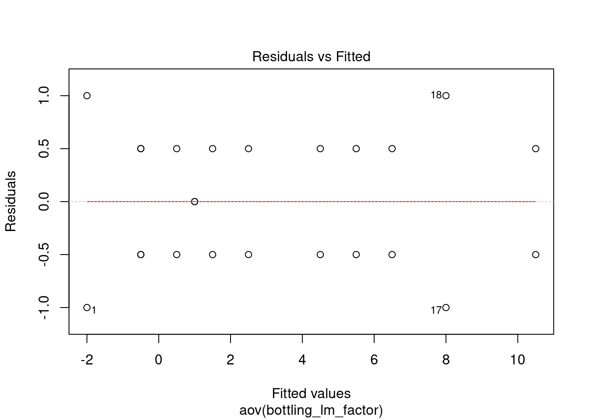

4.4 General factorial design
5.4
Like in the two-factors we must have at least two replicates (n>2) to determine the sum of squares due to error if all possible interactions are to be included in the model.
Reminder of fixed effects definition: Fixed or Random Factor? The statistical model, Equation 3.2, describes two different situations with respect to the treatment effects. First, the a treatments could have been specifically chosen by the experimenter. In this situation, we wish to test hypotheses about the treatment means, and our conclusions will apply only to the factor levels considered in the analysis. The conclusions cannot be extended to similar treatments that were not explicitly considered. We may also wish to estimate the model parameters ($, .i, !2). This is called the fixed effects model. Alternatively, the treatments could be a random sample from a larger population of treatments. In this situation, we should like to be able to extend the conclusions (which are based on the sample of treatments) to all treatments in the population,
Sources of variation for the Anova table for three-factor fixed effects model: A, B, C, AB, AC, BC, ABC
4.4.1 Soft Drink bottling example
bottling <- read.csv(sep = ";", header = TRUE,
paste0(working_folder, "5 bottling.csv"))
bottling_factor <- bottling
bottling_factor$speed <- as.factor(bottling$speed)
bottling_factor$pressure <- as.factor(bottling$pressure)
bottling_factor$carbonation <- as.factor(bottling$carbonation)4.4.2 Analysis of variance
bottling_lm_factor <- lm(fill ~
carbonation + speed + pressure +
carbonation:speed +
carbonation:pressure +
speed:pressure +
carbonation:speed:pressure,
data = bottling_factor
)
bottling_aov <- aov(bottling_lm_factor)
summary(bottling_aov)## Df Sum Sq Mean Sq F value Pr(>F)
## carbonation 2 252.75 126.38 178.412 1.19e-09 ***
## speed 1 22.04 22.04 31.118 0.00012 ***
## pressure 1 45.38 45.38 64.059 3.74e-06 ***
## carbonation:speed 2 0.58 0.29 0.412 0.67149
## carbonation:pressure 2 5.25 2.62 3.706 0.05581 .
## speed:pressure 1 1.04 1.04 1.471 0.24859
## carbonation:speed:pressure 2 1.08 0.54 0.765 0.48687
## Residuals 12 8.50 0.71
## ---
## Signif. codes: 0 '***' 0.001 '**' 0.01 '*' 0.05 '.' 0.1 ' ' 1We see that the percentage of carbonation, operating pressure, and line speed significantly affect the fill volume (p < 0.05) The carbonation-pressure interaction F ratio has a P-value of 0.0558, indicating some interaction between these factors.
4.4.3 Residuals analysis
bottling_residuals <- bottling_aov[["residuals"]]
qqnorm(bottling_residuals, datax = TRUE);qqline(bottling_residuals, datax = TRUE)
shapiro.test(bottling_residuals)##
## Shapiro-Wilk normality test
##
## data: bottling_residuals
## W = 0.86322, p-value = 0.003885bottling_tidyfit <- augment(bottling_aov)plot(bottling_aov, which = 2)
# It is finally in the plot residuals vs fit that we can clearly see an issue:
plot(bottling_aov, which = 1)
4.4.4 DoE plots
# Main effects plots:
# Percentage of carbonation
ggplot(bottling_factor, aes(x = carbonation, y = fill)) +
geom_boxplot()
# Pressure
ggplot(bottling_factor, aes(x = pressure, y = fill)) +
geom_boxplot()
# Line speed
ggplot(bottling_factor, aes(x = speed, y = fill)) +
geom_boxplot()
# Carbonation - Pressure interaction
# (corresponds to Montgomery page 210, figure 5.16 d)
ggplot(bottling_factor, aes(x = carbonation, y = fill, color = pressure)) +
geom_boxplot()